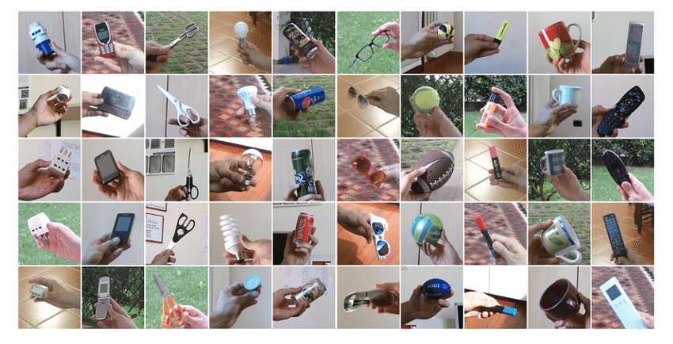

SELF ORGANIZING TASK REPRESENTATION FOR CONTINUAL LEARNING
Humans and animals can continually acquire, fine-tune, and transfer knowledge and skills throughout their lifespan. This ability, referred to as lifelong learning, is mediated by a rich set of neurocognitive mechanisms that together contribute to the development and specialization of our sensorimotor skills as well as to long-term memory consolidation and retrieval. Consequently, lifelong learning capabilities are crucial for computational systems and autonomous agents interacting in the real world and processing continuous streams of information.
Machine learning approaches generally learn from a stream of data randomly sampled from a stationery data distribution. Continual learning is a paradigm where the data distribution and learning objective change through time. A Continual learning system can be defined as an adaptive algorithm capable of learning from a continuous stream of information, with such information becoming progressively available over time and where the number of tasks to be learned (e.g. membership classes in a classification task) are not predefined. Continual learning intend to mitigate a phenomenon called Catastrophic forgetting. To understand this consider a situation where a neural network pre-trained on some data needs to be trained again with some newly encountered data. If the previously trained model is re-trained with the newly encountered data, the previously learned knowledge will be overwritten, which is called catastrophic forgetting. With the traditional (offline) deep learning algorithms, overcoming this will consume more time and computational power. Hence, in the CL scenario, a learning model is required to incrementally build and dynamically update internal representations as the distribution of tasks dynamically changes across its lifetime.
Our research involved in making use of the existing methodlogies to create a hybrid approch, which emphasises a streight forward take away in the continual learning research field. We took image classifictaion problem for this work. Continual learning methodologies address some key concepts to build the work on. The important ones are classes and tasks. A class carry the traditional meaning in a classification problem. A task can be defined as a set of classes which are given at once. Thus, a continal learning problem will have several tasks given incrementally. We used CoRE50 dataset for experiments, which is specifically designed to benchmark continual learning approaches. The method we came with was able to outperform some major works done previously, but not the state of the art as of 2020(REMIND).
CoRE50 Dataset
In this project I worked Architectural methods and rehearsal methods. Deciding on which methods to choose and incooporate was the first task. I worked with GWR(Grow When Required) and its adaptation. On the other hand in rehersal, I worked with Latent Replay rehersal method. There were many test cases to include methods from continual learning and other CNN approaches. The finalized architecture is as follows.